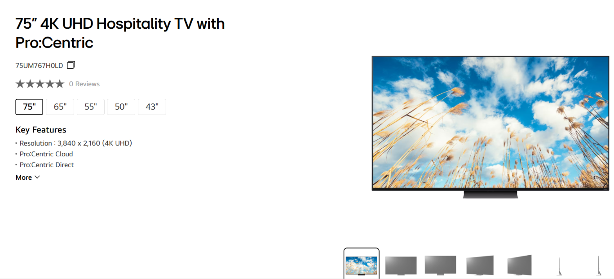
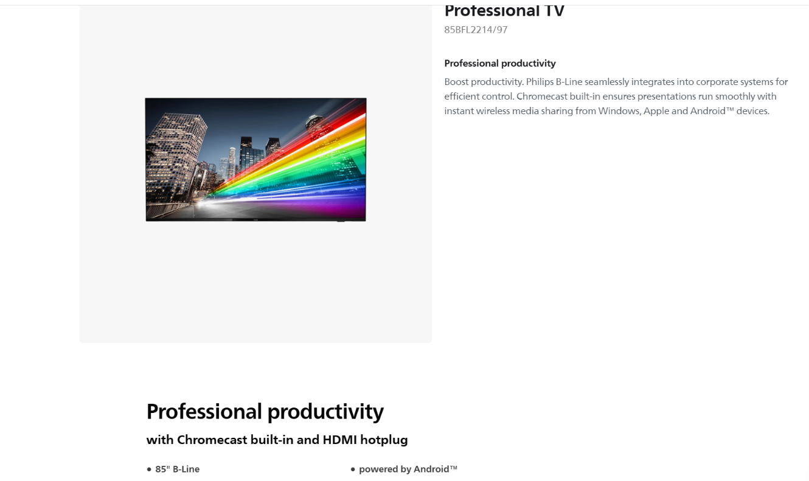

LG 75UM767H0LD
- 74.5 in screen
- 258 kWh per year
- 8.87 Star Rating
Finding the best large and eco-friendly TVs for Australian classrooms.
Schools need screens over 65 inches, but energy use varies widely even at the same size. To keep the comparison fair, the chart uses an equal-size sample so that no single technology dominates. Among screens of around 85 inches, labelled energy use ranges from about 500 kWh/year to about 1,770 kWh/year.

Energy use generally rises with screen size, but the spread at each size is large. Buying a large TV without checking its label could more than triple the school's electricity bill. No technology guarantees low use, because LCD, LCD (LED) and OLED models are all spread widely, so the specific model matters.
We filtered for the highest Star Rating Index among large TVs sold in Australia.

LG stands out. Its LCD (LED) models take the top spot with a rating of about 8.9 stars and fill 5 of the 10 places in the ranking, more than any other brand. LG's LCD (LED) technology is the most reliable choice for an energy-efficient classroom screen.
From thousands of models we selected the 10 best, ranging from about 74 to 86 inches, ranked by Star Rating and lowest energy use.



Every TV in the top 10 uses between about 258 and 500 kWh/year, a fraction of the 2000 kWh/year of the least efficient 85-inch models. LG appears more than once in the list and has the lowest energy use of all ten, so a high-rated LG LCD (LED) keeps running costs down at any screen size.
Conclusion: For most classrooms, choose the LG 75UM767H0LD. It has a 74.5-inch display, an 8.87 Star Rating and uses only 258 kWh/year, the lowest of the ten. If your school needs a bigger screen, consider the PHILIPS 85BFL2214/97 at about 85 inches. Its energy use rises to around 460 kWh/year, roughly 200 kWh more than the LG, but it is still far below the 2000 kWh/year of the least efficient 85-inch TVs.